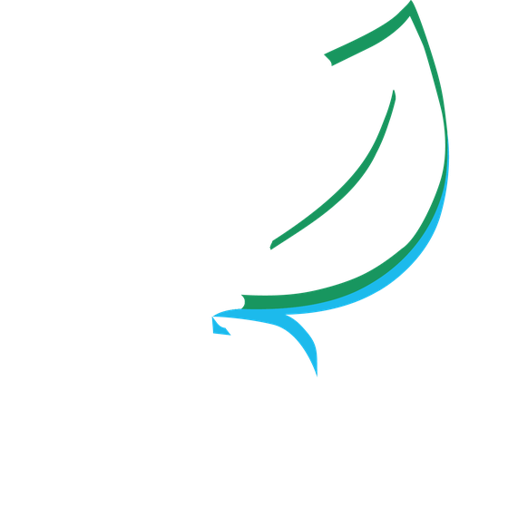
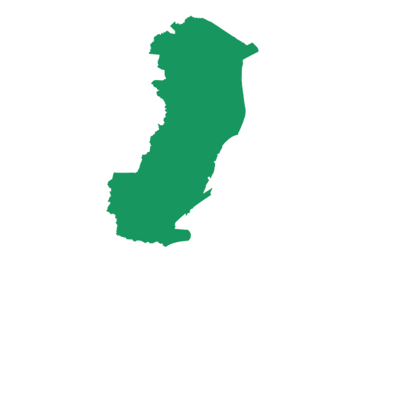
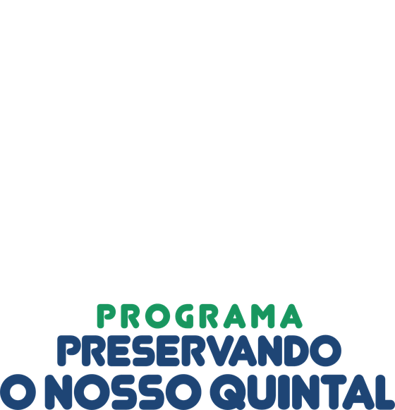

Livro
vivo
Aponte o celular para o livro e veja a natureza ganhar vida!
1
Toque em Começar
2
Permita o uso da câmera
3
Aponte para uma página com o selo
Páginas duplas: celular na horizontal
Começar
Editora Naturalistas
Aponte para a foto da página impressa
🔇 Ativar som